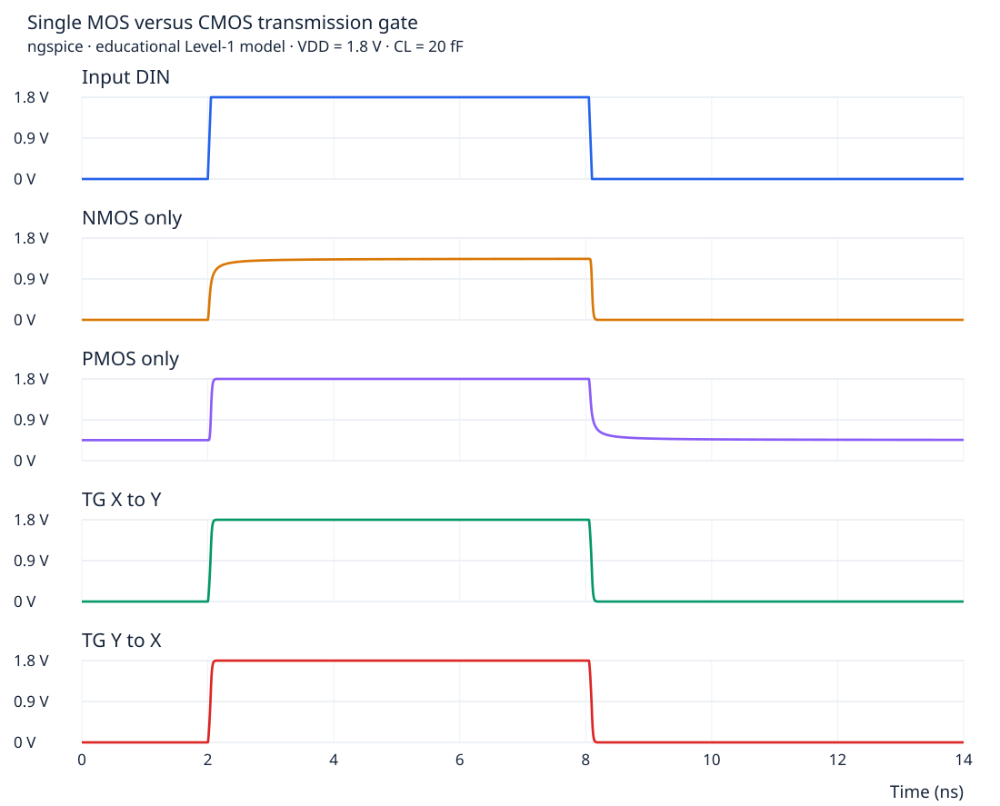
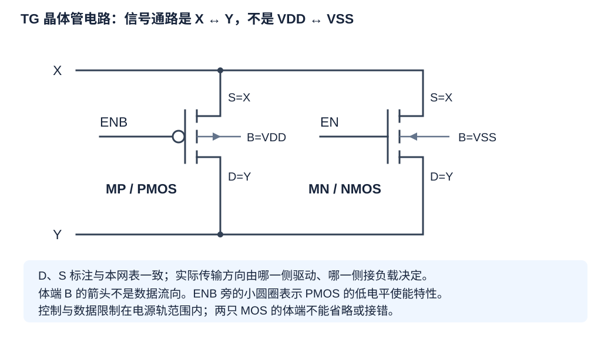
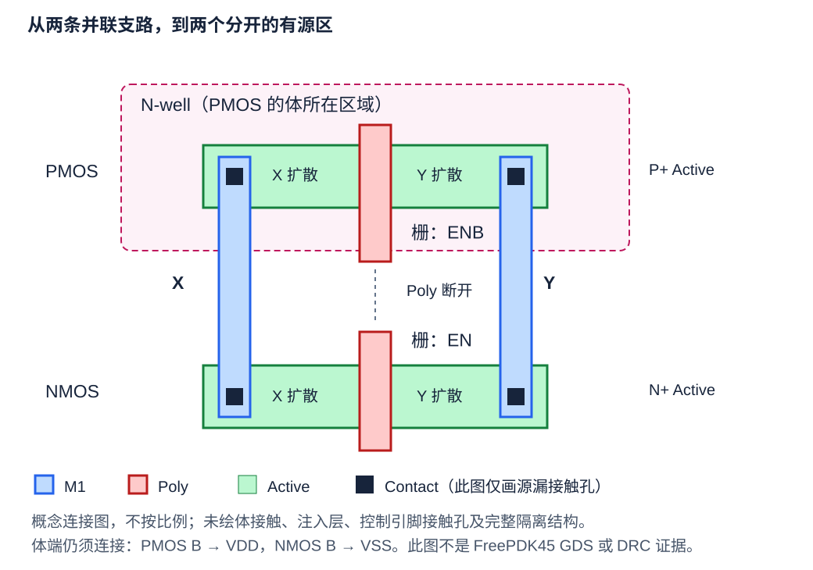
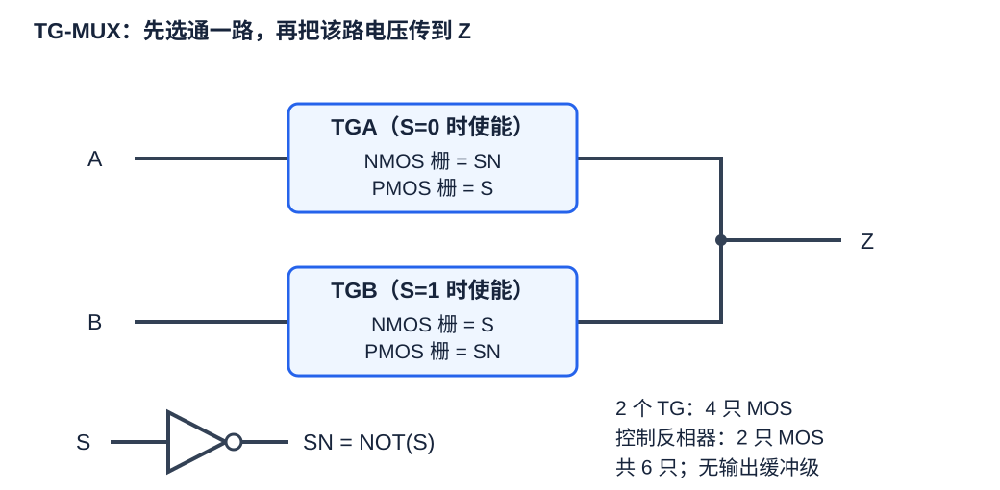
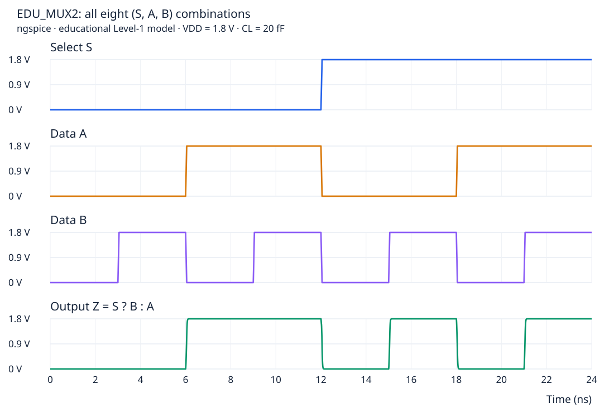
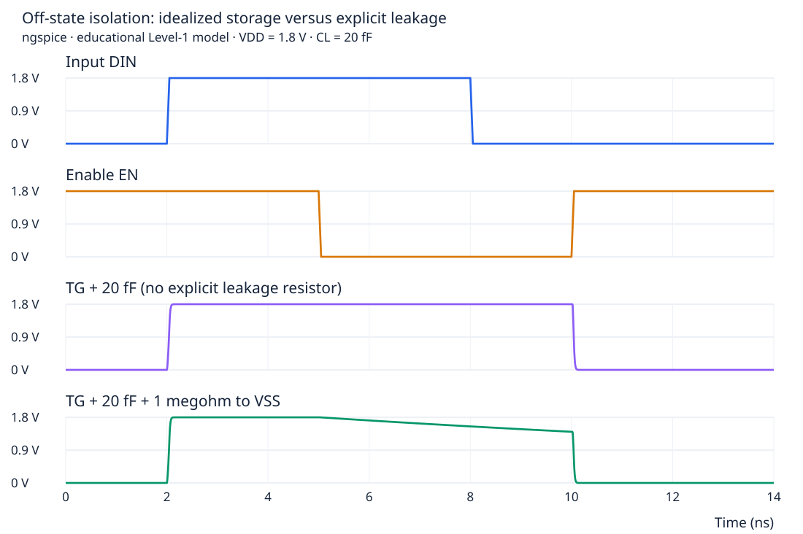
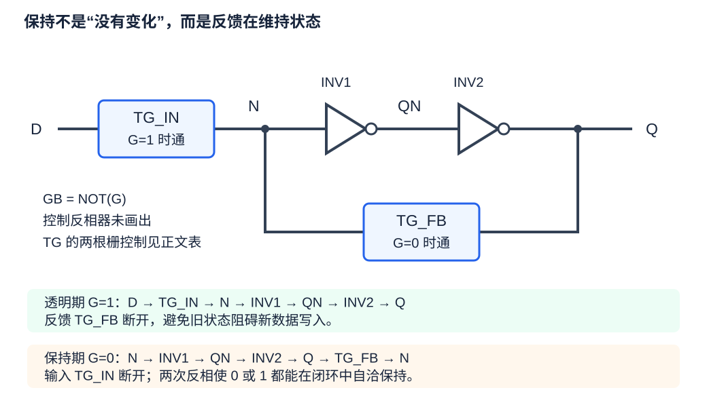
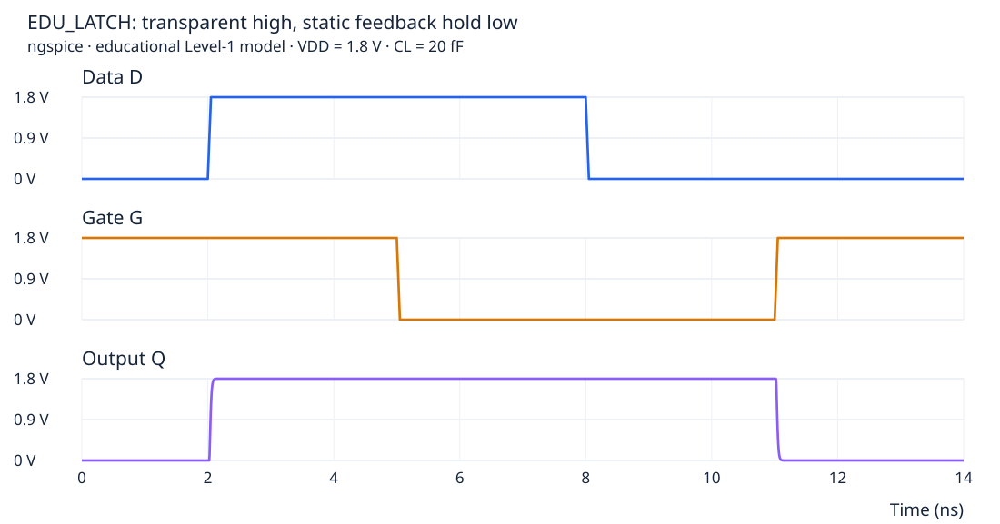

第 8 章 传输门基础：从单管传输到 MUX 与锁存器
已经会看 NAND/NOR 之后，学习另一种用 MOS 的方法：不是把输出接向电源，而是把两个信号节点接起来
- 算出单 NMOS 传高、单 PMOS 传低时，为什么栅源控制能力逐渐变弱。
- 从电路、四端网表、概念版图三个视角认出同一只 CMOS 传输门。
- 亲手推导两只传输门组成的 MUX，以及带反馈的静态锁存器。
- 区分全摆幅、电平恢复、高阻、暂存电荷、反馈保持，不把它们当成同一件事。
- 运行四组教学仿真，用测量和波形核对自己的理解。
EDU_* 模型、概念版图与真实 FreePDK45 单元明确分开；不涉及 FinFET、升压开关或跨电压域容限设计。首次学习可以分三次读：先读到网表，再读版图与 MUX，最后读保持、仿真和练习。8.1 先换一种思路：控制信号和被传递的数据不是同一个东西
在 NAND/NOR 中，A、B 接到 MOS 的栅极，决定上拉或下拉网络是否导通；输出由这些网络连接到 VDD 或 VSS。现在考虑另一种任务：有一个已经由别处产生的电压 X，希望“允许时送到 Y，不允许时隔开”。我们需要的是受控开关。
| 对象 | 接到哪里 | 负责什么 | 类比 |
|---|---|---|---|
| 数据 X、Y | MOS 的两个源漏端 | 经过导通沟道传递电压、交换电荷 | 开关两侧的导线 |
| 使能 EN | MOS 的栅 | 控制两侧是否连通 | 操作开关的手柄 |
| 体端 B | 衬底或阱的体偏置网络 | 建立正确器件偏置，影响阈值和结二极管 | 不能按“可有可无的外壳”处理 |
例如 X=1、EN=0：数据是高电平，但开关没有被使能。不能因为 X 是 1，就认定 NMOS 会打开；首先要看栅相对于源的电压。本章用逻辑 0/1 表示接近 VSS/VDD 的有效电平，计算时则写出实际伏特数。
一个理想开关使能时，可把 X 与 Y 看成连接；关闭时，只能说这条通路不再驱动 Y。如果 Y 还有别的驱动器、上拉、下拉或储存的电荷，它的电压由那些因素决定，不能直接写成 Y=0。
8.2 为什么单独一只 NMOS 或 PMOS 不够理想
先看 NMOS：传高时，为什么越接近目标越传不动
设 VSS=0 V、VDD=1.8 V，NMOS 栅固定在 1.8 V；X 由外部驱动器从 0 V 拉到 1.8 V，Y 原先为 0 V，并带一个电容。为了看清主要原因，暂取阈值 Vtn≈0.45 V，忽略体效应。电容意味着：Y 不能凭空从 0 瞬间变成 1.8 V，需要电流把电荷送进去。
在这个充电阶段，Y 是两端中电压较低的一侧，可作为理解沟道控制的源端。于是 VGS = VG − VY = 1.8 − VY。随着 Y 升高，栅电压没变，但栅源电压变小了：
| Y 的电压 | VGS | 相对于约 0.45 V 的阈值 | 充电趋势 |
|---|---|---|---|
| 0 V | 1.8 V | 有较大的过驱动 | 可以向 Y 充电 |
| 0.9 V | 0.9 V | 仍高于阈值 | 继续充电，但条件已改变 |
| 约 1.35 V | 约 0.45 V | 接近阈值 | 强反型导电能力显著减弱 |
| 假设要到 1.8 V | 0 V | 没有足够的栅源驱动 | 不能靠这只普通 NMOS 强力传到该电平 |
这就是“NMOS 传弱 1”的常见解释：在上述简化条件下，高电平趋近 VDD−Vtn 一带，而不是强力拉到 VDD。“弱”说的是传输能力和电平裕量，并不表示接收门必然把它读成 0；是否还能被识别为 1，要看接收门的输入阈值、噪声和工作条件。
再把 X 拉回 0 V。此时较低电位端在 X，栅对它仍有约 1.8 V 的驱动，Y 的电容可以通过 NMOS 向 X 的低电平驱动器放电，接近 0 V。这称为“NMOS 传强 0”。这里负责最终吸收电荷的是X 侧的驱动器，不是 NMOS 的体端。
再看 PMOS：传低时发生相反的问题
PMOS 栅固定为 0 V，判断导通可使用 VSG = VS − VG > |Vtp|。传高时，较高电位端 X=1.8 V，栅源控制充足，可以把 Y 充向 1.8 V。传低时，令 X=0 V、Y 原先为 1.8 V；此时 Y 是较高电位端，随 Y 放电，VSG=VY−0 逐渐变小，接近 |Vtp| 时强导电能力减弱，不能像 NMOS 那样强力传到 0。
| 一直使能的通路 | 输入为低电平 | 输入为高电平 | 简化记忆 |
|---|---|---|---|
| 单 NMOS，栅接 VDD | 能较好传到 VSS | 高端存在阈值损失问题 | 强 0、弱 1 |
| 单 PMOS，栅接 VSS | 低端存在阈值损失问题 | 能较好传到 VDD | 弱 0、强 1 |
8.3 把两者并联：CMOS 传输门如何工作
传输门（transmission gate，TG）用一只 NMOS 和一只 PMOS，并联在同一对数据端 X、Y 之间。NMOS 的栅接 EN，PMOS 的栅接 ENB；正常控制关系为 ENB=NOT(EN)。ENB 中的 B 表示这里采用了反相信号命名，不是 MOS 的体端 B；两者要根据上下文区分。

| EN | ENB | 开关级状态 | 对 X↔Y 的影响 |
|---|---|---|---|
| 0 | 1 | N、P 均未使能 | 正常关闭：通路呈高阻，但不是绝对无泄漏 |
| 1 | 0 | N、P 均被使能 | 正常开启：两类器件互补完成传输 |
| 0 | 0 | 只有 P 被使能 | 退化为单 PMOS 传输，不能保证良好传低 |
| 1 | 1 | 只有 N 被使能 | 退化为单 NMOS 传输，不能保证良好传高 |
“两管同时开启”是开关级的简写，不是说两只管在所有信号电压下都流过同样大的电流。传高接近 VDD 时，NMOS 的贡献减弱，PMOS 仍可完成高端传输；传低接近 VSS 时，PMOS 的贡献减弱，NMOS 仍可完成低端传输。因此它没有单管那种必须损失一个阈值的高端或低端限制，常称为能传递全摆幅信号。
这里的“全摆幅”仍有条件：控制电压合适、数据没有越过电源轨、负载合理、给足建立时间。TG 不是零电阻导线。关于单管阈值损失和互补通路，可对照UNM 的 CMOS transmission gate 课程讲义；本章下图则是随书模型实际运行的结果。

| 20 fF 负载通路 | 7 ns：传高后的实测值 | 13 ns：传低后的实测值 |
|---|---|---|
| 单 NMOS | 1.341 V | 约 0 V |
| 单 PMOS | 1.800 V | 0.460 V |
| TG，驱动 X、观察 Y | 1.800 V | 约 0 V |
| TG，驱动 Y、观察 X | 1.800 V | 约 0 V |
条件为自拟模型、VDD=1.8 V、25°C；表内已取整。原始数值、判定范围与时间见测量记录，不是 FreePDK45 或某个 180 nm PDK 的性能结论。
8.4 逐项读懂四端网表：电源为什么不是数据端

.subckt EDU_TG X Y EN ENB VDD VSS
* D G S B model
MN Y EN X VSS N_EDU W=1u L=0.18u
MP Y ENB X VDD P_EDU W=2u L=0.18u
.ends EDU_TG| 实例 | D | G | S | B | 读成一句话 |
|---|---|---|---|---|---|
| MN | Y | EN | X | VSS | EN 控制 X 与 Y 之间的 N 沟道，体偏置到 VSS |
| MP | Y | ENB | X | VDD | ENB 控制 X 与 Y 之间的 P 沟道，体偏置到 VDD |
.subckt 行声明单元接口的顺序，M 行才采用 D/G/S/B 器件端子顺序，两种顺序不能混用。N_EDU/P_EDU 是模型名；W/L 是教学尺寸，不表示“所有传输门都应该 P 宽等于 N 宽的两倍”。完整模型和电路分别位于 edu_inv.sp 与 edu_tg.sp。
与反相器对照：为什么这里两管同时使能不会直接短接电源
反相器中，一只 PMOS 的源接 VDD，一只 NMOS 的源接 VSS；若两条通路同时强导通，可能出现 VDD→PMOS→输出→NMOS→VSS 的电流。TG 不同：两只管的两个源漏端都接 X、Y，没有一端按该结构直接接到 VDD/VSS。这里 VDD/VSS 连到的是体端，不能把体端误读成源端。
但如果外部驱动器把 X 强拉为 1、同时另一个驱动器把 Y 强拉为 0，开启 TG 仍会导致驱动争用。正确结论是“传输门结构不等于反相器的上下拉直通”，不是“传输门永远没有大电流风险”。
“双向”是什么意思，为什么不能随意交换所有端子
同一只 TG，可以在一次实验中由 X 驱动 Y，在另一次实验中由 Y 驱动 X；上节波形已经分别验证这两种方向。这不要求改接栅或体端，也不意味着同时把两端都设为互相冲突的强驱动。
平面 MOS 的源漏沟道在合适模型与偏置下可近似双向工作，但真实器件可能有不对称结构、方向要求及结二极管。体端仍须按 PDK 接到指定偏置，不能因为“传双向”就浮置、跟随任意数据或跨电源域使用。一旦 X/Y 越过电源轨，还需检查结正偏、栅氧可靠性等，本章模型不能证明安全。
只有 MN、MP 时是 2 只 MOS。若单元外只给一个 EN，还要在某处生成 ENB；用普通 CMOS 反相器生成，就另有 2 只 MOS。说“TG 只要两管”通常没有计入互补控制的生成电路。
8.5 从版图认出 TG：看网络证据，不只看上下两只管
你已经能通过 Active、Poly、Contact 和 M1 看出 NAND/NOR 的串并联。识别 TG 仍用相同方法，只是不要再预设“上面一定接 VDD、下面一定接 VSS”。先隐藏不相关图层，再按网络逐个追踪：

| 追踪顺序 | 应得到的证据 | 常见误判 |
|---|---|---|
| 1. 数沟道并判断 N/P | 各有一段 Poly 跨过对应 Active；结合阱和注入层判定器件类型 | 只看上下位置或图层颜色判定 |
| 2. 追踪 X | 一侧 P 扩散和一侧 N 扩散，通过 Contact/M1 属于同一网络 X | 上下对齐就当作已经相连 |
| 3. 追踪 Y | 另外两侧扩散也通过金属共同接到 Y | 只核对了一端相同就说是并联 |
| 4. 追踪两条栅 | N 栅是 EN，P 栅是 ENB；从控制电路确认互补关系 | 看到两条相似 Poly 就当作同一输入 |
| 5. 检查体与隔离 | P 的阱/体按要求接 VDD，N 的体按要求接 VSS；完整图里找到相应体接触 | 把源漏 Contact 当成体接触，或者认为体端不用连 |
写成扩散片段序列时，上行可记为 X−[ENB]−Y，下行可记为 X−[EN]−Y。方括号表示某条栅跨过 Active，不是金属导线。两行栅即使在几何上对齐，也不能用一根连续 Poly 直接贯穿上下两行，否则 EN 与 ENB 会短接。
X0−[EN0]−Y−[EN1]−X1。这是不同 TG 之间同类型管的共享机会，还不是实际已经共享的证明。回到上一章的 Euler 思路：它仍能帮助同类型器件寻找相接网络相同的顺序，但本例 P/N 的栅标签本来就不同。不能把静态互补门的“上下同一输入栅容易贯通”当成所有电路都必须满足的前提。
8.6 第一个完整应用：用两只 TG 做二选一 MUX
先说功能和用途，再看器件
MUX（multiplexer，多路选择器）的任务是选择数据，不是存储数据。二选一 MUX 有两个数据输入 A/B、一个选择输入 S、一个输出 Z：S=0 时选 A，S=1 时选 B，写作 Z = (!S & A) | (S & B)。这里输出名 Z 是普通节点名，不是表述高阻状态的逻辑符号 Z。
用途可以是：在两路计算结果之间选择；在正常数据与测试数据之间选择；实现条件表达式 assign Z = S ? B : A;。对于 8 位数据，可以逐位放置 8 个一位 MUX，共享同一个选择信号，但 S 的负载也会相应增大，不能只按一位电路估计驱动能力。

| S | SN | TGA：N 栅 / P 栅 | TGB：N 栅 / P 栅 | 稳态通路 |
|---|---|---|---|---|
| 0 | 1 | 1 / 0，使能 | 0 / 1，关闭 | A↔Z，B 与 Z 隔离 |
| 1 | 0 | 0 / 1，关闭 | 1 / 0，使能 | B↔Z，A 与 Z 隔离 |
| S | A | B | Z | 判断理由 |
|---|---|---|---|---|
| 0 | 0 | 0 | 0 | 选 A=0 |
| 0 | 0 | 1 | 0 | B=1 不应改变结果 |
| 0 | 1 | 0 | 1 | 选 A=1 |
| 0 | 1 | 1 | 1 | 选 A=1 |
| 1 | 0 | 0 | 0 | 选 B=0 |
| 1 | 0 | 1 | 1 | 选 B=1 |
| 1 | 1 | 0 | 0 | A=1 不应改变结果 |
| 1 | 1 | 1 | 1 | 选 B=1 |
用子电路拼装，逐行数到 6 只 MOS
.subckt EDU_MUX2 A B S Z VDD VSS
XSEL S SN VDD VSS EDU_INV
XA A Z SN S VDD VSS EDU_TG
XB B Z S SN VDD VSS EDU_TG
.ends EDU_MUX2X 开头的是子电路实例，不是一只 MOS。EDU_INV 的端口顺序是 A Y VDD VSS，所以 XSEL 由 S 产生 SN；EDU_TG 的顺序是 X Y EN ENB VDD VSS，所以 XA 的 N 栅接 SN、P 栅接 S。展开后：控制反相器 2 管，两个 TG 共 4 管，总计 6 管。
如果看见 XA A Z S SN ...，不要只看实例名 XA 就认为它选 A 的条件仍是 S=0；端子位置改变后，它会在 S=1 时使能。读子电路必须同时看声明与实例，不凭名称猜。

同一结构还能做哪些逻辑
| 希望得到的功能 | MUX 接法 | 代入方程检查 | 注意 |
|---|---|---|---|
| 条件选择 | A=D0，B=D1 | S=0 取 D0，S=1 取 D1 | 基本用法 |
| AND | A=0，B=D | Z=S·D | 能实现不代表比普通 AND 单元更好 |
| OR | A=D，B=1 | Z=D+S | 常量源与驱动连接仍要按库规则处理 |
| XOR | A=D，B=!D | S=0 输出 D，S=1 输出 !D，即 D⊕S | 还需生成 !D；不是“不增加器件的 XOR” |
| 扫描数据选择 | A=正常 D，B=扫描 SI，S=SE | SE 选择正常或扫描数据 | 选择器本身不会移位，还要后接存储单元 |
这些是功能构造练习，不是综合工具必须选用的实现。真实 MUX/XOR/扫描单元还要按面积、时序、功耗、引脚和布线条件选择结构。
8.7 TG 与 BUF、三态门的区别：全摆幅不等于电平恢复
假设 EN 已正确使能，但 X 是 0.9 V，而不是有效的 0 或 1。TG 可能把 Y 也传到接近 0.9 V；它没有义务替你“决定到底应该变成 0 还是 1”。它消除了单 NMOS/PMOS 的主要阈值传输限制，却没有静态 CMOS 逻辑级的再生能力。
反相器从 VDD/VSS 获取驱动输出的能量；当输入落在有效逻辑范围内，它可产生接近另一条电源轨的输出。这叫电平恢复。输入恰好处于门的转换区时，反相器也不能保证稳定有效的逻辑值，所以“加一只反相器可以修复任意坏输入”同样不成立。
| 电路 | 正常功能 | 信号方向 | 输出电平如何建立 | 禁止时 |
|---|---|---|---|---|
| INV，反相器 | Y=!A | 指定输入到输出 | 从电源轨主动驱动，并反相 | 普通 INV 无使能端 |
| BUF，非反相缓冲器 | Y=A | 指定输入到输出 | 常见结构为两级反相器，具有驱动和电平恢复 | 普通 BUF 无使能端 |
| TG，传输门 | 使能时 X↔Y 连通 | 器件通路可双向 | 传递另一端已有的电压；无独立逻辑再生 | 隔离该通路 |
| TBUF，三态缓冲器 | 使能时 Y=A | 指定输入到输出 | 受控的主动输出驱动级 | 输出驱动级呈高阻 |
| TINV，三态反相器 | 使能时 Y=!A | 指定输入到输出 | 受控、反相的主动驱动级 | 输出驱动级呈高阻 |
Z=S?B:A；若后接单个 INV，新输出就是 !(S?B:A)。要保持原极性，可以用非反相缓冲级，或重新设计前级逻辑，不能把“可选恢复反相器”写在图上却忘了修改功能表。双向描述的是 TG 通路。一个作为标准单元交付的 MUX，通常仍定义 A/B/S 为输入、Z 为输出；内部有双向器件，不代表接口可以任意反用。TG 也可作为模拟开关的一部分传递范围内的连续电压，但精度、线性、噪声和可靠性需要额外设计；不能把这里两只核心 MOS 直接当成 GPIO 引脚单元。
8.8 关闭后输出为什么没立刻变成 0：从高阻到暂存电荷
做一个时间顺序实验：先打开 TG，用 X=1 把 Y 的电容充高；然后关闭 TG；最后把 X 改成 0。此时 X 已经变低，但 Y 不再通过 TG 跟着放电。高阻描述的是通路的驱动状态，不是一个电压值。
电容的基本关系是 Qcharge=C·V。没有电流把电荷取走时，Y 会暂时保留之前的电压。真实电路存在泄漏、耦合和负载，因此这个电压未必能长期保持；关闭时若还发生控制耦合，节点也可能出现小跳变。
本实验并排建立两个相同的 TG+20 fF 节点：一个没有额外泄漏电阻；另一个加 RLEAK=1 MΩ 到 VSS，专门让泄漏后果变得可观察。第二个节点的近似放电时间常数是 RC=1 MΩ×20 fF=20 ns。这个电阻是教学中故意加入的通路，不是从 PDK 测得的 MOS 泄漏参数。

8.9 第二个完整应用：用反馈做静态锁存器
第一步：先明白为什么两个反相器可以保持一个状态
设两个反相器串接：N → INV1 → QN → INV2 → Q。如果再把 Q 接回 N，就形成反馈环。检查两个有效逻辑状态：
| 假设 N | INV1 输出 QN | INV2 输出 Q | Q 回接 N 是否自洽 |
|---|---|---|---|
| 0 | 1 | 0 | 是，维持 0 |
| 1 | 0 | 1 | 是，维持 1 |
保持时，反相器仍由电源供电，不是只有一颗孤立电容。在有效状态附近受到小扰动时，闭环可把节点推回稳定电平。若直接让外部 D 强行驱动这个闭环，它可能与旧状态争用，所以写入新数据时，应先使反馈通路退出。
第二步：用一只输入 TG 和一只反馈 TG 交替接通

这里用 G 表示锁存器的使能输入，GB=NOT(G)。不要把电路端口 G 与“某只 MOS 的栅端 G”混成同一个层次；表中会写清每只 TG 的 N 栅、P 栅分别连接什么。
| G | GB | TG_IN：N 栅 / P 栅 | TG_FB：N 栅 / P 栅 | 作用 |
|---|---|---|---|---|
| 1 | 0 | G / GB = 1 / 0，通 | GB / G = 0 / 1，断 | 透明期：D 可以更新 N，经过两次反相后 Q 跟随 D |
| 0 | 1 | G / GB = 0 / 1，断 | GB / G = 1 / 0，通 | 保持期：隔离 D，Q 通过反馈维持 N |
“透明”不是延迟为零，只是这一整段 G=1 的时间里，数据变化都能传播到 Q；“保持”是 Q 不再跟随之后的 D 变化。这种电路称为高电平透明 D 锁存器（positive-level-sensitive D latch），不是只在上升沿采样的 D 触发器。
| G | D | 先前有效状态 Qold | 建立后的 Qnew |
|---|---|---|---|
| 1 | 0 | 任意 | 0 |
| 1 | 1 | 任意 | 1 |
| 0 | 任意 | 0 | 0 |
| 0 | 任意 | 1 | 1 |
这是一张带状态的功能表，不是纯组合真值表。Qold 必须来自此前有效写入或复位；若上电就保持、又没有复位，不能承诺初值一定是 0。输入恰在关闭窗口变化时，还涉及建立/保持时间甚至亚稳态，这些情况不由上面的理想状态表保证。
第三步：把反馈准确写进网表
.subckt EDU_LATCH D G Q VDD VSS
XEN G GB VDD VSS EDU_INV
XIN D N G GB VDD VSS EDU_TG
XI1 N QN VDD VSS EDU_INV
XI2 QN Q VDD VSS EDU_INV
XFB Q N GB G VDD VSS EDU_TG
.ends EDU_LATCH从输出 Q 往回追：XI2 的输入为 QN，XI1 的输入为 N，XFB 在保持期把 Q 接回 N。反馈接回的是第一只反相器前面的内部节点 N，不是把外部 D 与 Q 永久短接。器件数为两个 TG 的 4 管、数据反相器的 4 管、控制反相器的 2 管，共 10 管；若互补控制由外部提供，本体是 8 管，需说明计数边界。

从单管暂存，到传输门，再到恢复级和静态反馈的教学顺序，可参考 David Harris《CMOS VLSI Design》Sequential Circuits 讲义，第 14～24 页。本章使用的是上面自行给出的明确网表；后续锁存器章节再结合真实库的 DLH/DLL 实现，时序单元章节继续区分锁存器、触发器和扫描结构。
8.10 为什么原理正确，还可能“翻转不过去”
原理图上画一条通路，不代表指定负载与时间窗口内，电压一定能到达接收端的有效阈值。学习阶段先把下面几项与具体电路现象对应起来：
| 实际因素 | 会发生什么 | 检查或改动时看什么 |
|---|---|---|
| 导通电阻 Ron 与负载电容 | 输出充放电要时间；多级串接、负载增大会拖慢 | 看输入、输出波形和负载；用 RC 建立直觉，再以模型仿真测量 |
| 器件 W | 加宽一般有利于降低通路电阻，但增加面积、栅电容和源漏寄生 | 同时评估数据端与控制端负载，不只看输出是否变快 |
| EN 与 ENB 不是瞬间互补 | 切换中会经过部分使能状态，导通能力随时间变化 | 画出实际 EN/ENB 电压，而不是只画理想逻辑反相 |
| MUX 两条通路有导通过渡重叠 | A、B 不同时可能有暂态争用；不一定要两只 TG 全部强导通才会发生 | 在 A=0/B=1 和 A=1/B=0 下切换 S，观察 Z 与支路电流 |
| 通路交接出现空档 | 输出短时间无人驱动，靠电荷保持，易受耦合影响 | 检查实际空档、负载与接收时刻；不是盲目加大非重叠时间 |
| 锁存器输入与反馈交接不合适 | 写入可能受旧状态阻碍，或在关窗附近不可靠 | 观察 N、QN、Q 和两相控制，并检查建立/保持约束 |
| 体连接、供电或模型错误 | 阈值、结电流或整个功能异常，可能表现为不能翻转 | 先核对四端网表、模型、引脚映射与电源，再谈尺寸优化 |
把 TG 粗略视作电阻给电容充电，可用 τ≈Ron·CL 理解快慢；但 Ron 随信号电压改变，驱动器也不是理想电源，不能拿一个常数 RC 直接替代时序表征。连续串接多个 TG 时，中间节点还有自己的寄生电容，必要时需要有源恢复/缓冲级。
选读：电荷注入与时钟馈通分别是什么
开关关闭时，原来沟道内的电荷会重新分配，一部分可能进入被隔离的信号节点，这叫电荷注入。栅控制电压的跳变还可通过寄生电容耦合到源漏节点，称为时钟馈通。两者都会使“刚关闭”的节点电压偏离理想值；互补器件可能部分抵消某些影响，但不保证恰好抵消。本章简单模型未完整建立这些寄生，不能用其平滑波形判断真实芯片不存在这些效应。
所以，同事说“翻转不过去”时，应追问：哪个节点、什么控制相位、输入如何激励、负载多大、预期在何时越过哪个阈值？既可能电路或连线有错，也可能通路太慢、没有被正确使能，或者测量窗口/初始状态不合适。后续SPICE 波形章节与表征故障排查章节会把这种判断落实到测量记录。
8.11 自己运行：从一张波形追到电路与测量
本章图不是手工画出的预期波形，而是 ngspice 实际计算后由脚本生成的 SVG。先确认安装了 Python 3 与 ngspice；脚本只用 Python 标准库，不需要安装额外 Python 包。从教程根目录执行：
python --version
ngspice --version
TUTORIAL_TG_OUT=$(mktemp -d /tmp/stdcell-tg.XXXXXX)
python examples/learning/transmission_gate_lab.py --output "$TUTORIAL_TG_OUT"输出目录必须为空，脚本会拒绝覆盖旧证据。终端应分别显示 pass_levels、isolation、mux、latch 四项 PASS；共 25 个取样电压通过相应范围检查。缺工具、缺测量或数值超范围时会报错退出，不会把缺失值补成“通过”。
| 输出文件 | 用途 | 第一次应该看什么 |
|---|---|---|
各实验/test.sp | 完整仿真输入文件，也叫仿真 deck | 包含了哪个电路、谁驱动数据/控制、负载接在哪里 |
各实验/run.log | 仿真器消息与测量结果 | 是否存在报错，以及每项 FIND 电压是否成功得到 |
各实验/waveform.dat | 未压缩的时域数据 | 时间单位为秒；每条向量以“时间、电压”成对存放 |
pass_levels.svg 等四图 | 原始数据生成的可缩放波形 | 先对照控制相位，再观察输出 |
measurements.json | 电压、取样时刻、允许范围 | 不要把 7 ns 的取样电压误当成传播延迟 |
provenance.json | ngspice 版本与源文件 SHA256 | 记录用了哪个模型、哪版脚本及验证边界 |
例如 单管/TG 对照 deck 中的几行，可这样拆开：
VIN DIN 0 PULSE(0 1.8 2n 50p 50p 6n 20n)
XT DIN YTG VDD 0 VDD 0 EDU_TG
CT YTG 0 20f
.tran 5p 14n
.measure tran tg_high FIND v(ytg) AT=7nVIN在 DIN 对地施加脉冲：低 0 V、高 1.8 V、延后 2 ns、上升/下降各 50 ps、高电平脉宽 6 ns、周期 20 ns。它定义数据激励，不是电源 VDD 本身。XT按 TG 的六个端口顺序连接，EN 接 VDD、ENB 接 0，所以本次始终使能。最后两个 VDD/0 是体偏置接口，前面的 VDD/0 是控制连接。CT给观察节点增加 20 fF 对地负载；0是 SPICE 的参考地节点。.tran做到 14 ns 的瞬态分析，使用 5 ps 的步长参数；仿真器内部仍可能采用自适应时间步，不要认定每个原始数据点都恰好相隔 5 ps。.measure ... FIND ... AT=7n取 7 ns 时的节点电压。本章测的是特定时刻的功能电平；不是cell_rise等传播延迟测量，也没有生成可签核的 Liberty。
可直接进入某个实验目录重跑 ngspice -b -o rerun.log test.sp，这会重新生成该目录的原始波形；若要保留原结果，先复制整个实验到新的个人练习目录。归档 deck 中的 include 是生成时的绝对路径，换机器应重新执行脚本，让它根据当前位置生成路径。
- 在个人副本中把 20 fF 改成 200 fF，预测上升/下降过程如何变化，再画图比较。充分建立后的 TG 输出不应被简单判成“固定少一个 Vt”。
- 在隔离实验中把 1 MΩ 改成 500 kΩ，预测时间常数变为多少、9 ns 的电压升还是降。
- 在 MUX 实验中固定 A=0、B=1，只改变 S，观察选择通路交接；再固定 A=B=1，比较输出为什么可能一直是 1。
- 在锁存器实验中改变保持期内 D 的切换次数，预测 Q 是否跟随。不要只修改数据后继续机械沿用原测点的期望值。
应观察到的方向与实验边界
负载增大会增加充放电所需电荷；500 kΩ×20 fF=10 ns，其他条件相近时隔离节点衰减更快、9 ns 电压更低。A=0/B=1 时 Z 应在建立后随 S 变化；A=B=1 时选中哪路都应得到 1，不能用“Z 没翻转”证明选择器坏了。保持期 D 多次变化也不应改变已保存的 Q。修改模型或激励后应重新设计测点和判据；原脚本的固定判据专门服务于随书基线，不是任意电路的自动验收器。
8.12 回到真实库与 LibreCell：会搭 TG 不等于所有 MUX 都是 TG
对照 FreePDK45 MUX2_X1：功能相同，实现可以不同
本地 Nangate CDL 的 MUX2_X1 有 12 只 MOS。检查 A、B：它们接在相关 MOS 的栅端，而不是像本章 EDU_MUX2 那样通过 TG 的源漏端进入。它用静态互补逻辑选择网络产生内部 Z_neg，再由输出反相器得到 Z，不是本章的“两只 TG 加一个控制反相器”结构。


为什么这会影响自动生成平台
在本书固定的 LibreCell 提交 f708e3a 中，lccommon/net_util.py 的 get_cell_inputs() 使用“只连接栅、不连接源漏”的网络来推断输入，文档明确说明该启发式不适用于传输门：TG 的数据恰恰进入源漏。place/eulertours.py 对不连通晶体管图有“假定存在 TG”的处理，但还保留了传输门较多时搜索效率与规模可扩展性的 TODO。
因此不能简单说“完全不支持 TG”，也不能从“成功读入网表”推出“能够正确完成端口识别、布局、布线和表征”。后续晶体管布局章节从源码再分析这个边界。这里先建立最低验收意识：
- 端口：明确数据、控制、电源、体偏置和输入/输出角色，不只靠是否接栅猜测。
- 几何与连接：互补栅不能短接，N/P 扩散分开，体与阱正确；生成后做针对目标工艺的 DRC 和四端 LVS。
- 功能与状态：测试两种数据极性、使能/禁止、MUX 全部组合，以及锁存器的写入和保持。
- 电气与时序：分别考虑数据弧、控制弧、负载、控制交接、内部浮空和初始状态；最终 Liberty/Verilog 必须与实际电路一致。
8.13 检查点：能够推导，而不只是记住“互补开关”
- 为什么 NAND 的数据输入通常接栅，而 TG 的数据输入接源漏？EN=0、X=1 时，TG 是否应传 1？
- NMOS 栅为 1.8 V、Y 升到 1.2 V 时，VGS 是多少？继续升到 1.35 V 附近，为什么充电能力减弱？
- 一只 TG 的 NMOS 与 PMOS 都连接 X/Y，是否表示它们共享了一块 Active？两条栅能用同一根连续 Poly 吗？
- 写出 EDU_MUX2 在 S=0/A=1/B=0 时，每个 TG 的两根栅电平、哪个通路有效及 Z 的结果。后接一个 INV 后结果又是什么？
- TG 关闭后 Y 暂时停在 1.8 V，能否证明它是静态锁存器？为何加泄漏电阻后会下降？
- 锁存器先在 G=1 时写入 D=1，然后 G=0，再把 D 改为 0；Q、QN、N 应各是多少？下一次 G=1 后呢？
- 把锁存器反馈 TG 的控制误接成与输入 TG 相同，会在哪个相位产生什么问题？
- 为什么 EDU_MUX2 是 6 管，EDU_LATCH 是 10 管？这些数字能直接套给 Nangate MUX2_X1、DLH_X1 吗？
- 在本章结果中找到 1.341048 V 的来源：哪个实验、哪个测量名、哪个节点、哪个时刻？它是传播延迟吗？
逐题答案
- NAND 用数据控制电源到输出的通路；TG 的数据本身经过沟道，EN 才是开关控制。正常 EN=0/ENB=1 时不经 TG 传递 X，但 Y 最终电平还取决于其他连接和电荷。
- VGS=1.8−1.2=0.6 V；升到约 1.35 V 时只剩约 0.45 V，接近本例阈值。数值只适用于说明这一简化偏置过程。
- 不是。两类扩散分开，由金属连接同名网络；EN/ENB 不同，不能用同一根连续 Poly 短接。
- TGA 的 N/P 栅为 1/0，TGB 为 0/1，Z 由 A 传为 1；后接一级 INV 得到 0。该 INV 改变了输出极性。
- 不能，可能只是电容暂存，且简单模型泄漏很小。电阻提供放电通路，电荷减少使电压下降；静态锁存保持依赖有源反馈而非孤立电荷。
- 保持期 Q=1、QN=0、N=1，D=0 被隔离；再次透明且充分建立后 N=0、QN=1、Q=0。
- G=1 时输入与反馈一起开启，新 D 可能和旧状态争用；G=0 时两者一起关闭，内部输入节点变成依赖电荷的浮空节点，失去原设计的静态反馈保持。
- MUX 是两个 TG 加一个控制 INV，即 4+2；锁存器另加两个数据 INV，即 4+2+4。不计入互补控制生成时计数不同；真实库可能选择受控反相器或静态 CMOS 网络，必须逐管核对。
pass_levels的n_high，取v(yn)在 7 ns 的电压，可在该实验 log 和 measurements.json 对上。单位是 V，不是传播延迟。